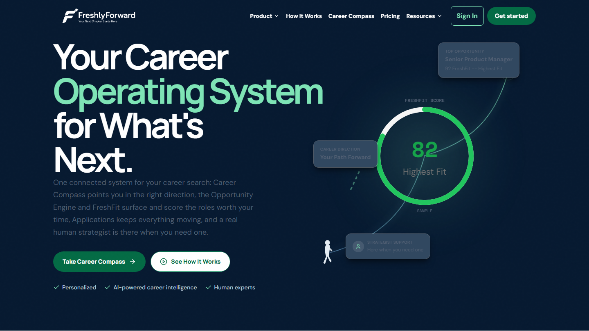
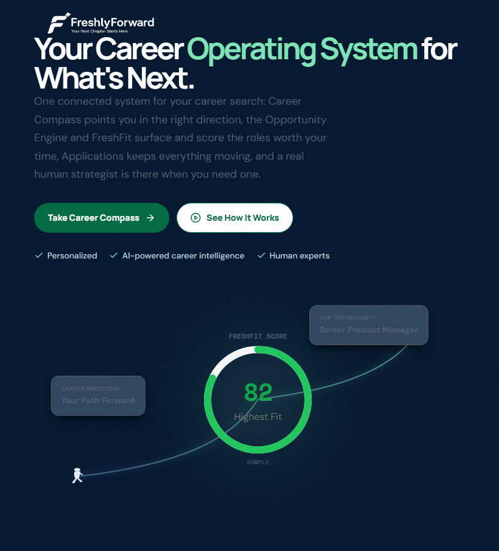

What changed this round (composition, not positioning)
- FreshFit ring is now absolutely positioned exactly where the path is drawn through it, with a higher z-index -- the path visually runs into the ring and continues out the other side.
- Ring is significantly larger: 240px desktop (was 196), 180px tablet (was 140).
- Graphic column grows from 460px to 600px min-height on desktop -- uses vertical space already present in the row (left column is naturally ~618px tall), so the section itself did not grow.
- Human figure replaced: a stylized "walking forward" pictogram (leaning torso, mid-stride legs, swinging arm) instead of the old static bust silhouette.
- Down to 3 desktop cards -- Career Direction, Top Opportunity, Strategist Support -- each attached to the journey by a thin connector stub, not scattered independently.
- Tablet is a separate, deliberately-composed layout (own node coordinates, not a shrunk desktop copy): bigger ring, 2 cards, centered.
- Mobile gets a brand new compact horizontal journey (person → path → FreshFit → one card) instead of hiding the graphic entirely.
- Card contrast bumped again (+14% white tint, stronger ring/shadow) per "still too faint" feedback.
Desktop — 1440px

Tablet — 834px

Mobile — 390px
Validation
- Focused hero test suite: 14/14 passed.
- Full suite: 65 files / 364 tests passed.
- Build: clean (only the pre-existing bundle-size warning).
- No horizontal overflow at tablet or mobile.
- No card/ring/path overlaps found in the final render at any breakpoint.
Not committed, not pushed. Stopping here per instructions for visual review before any further action.